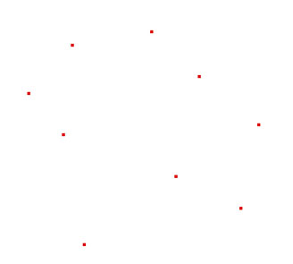
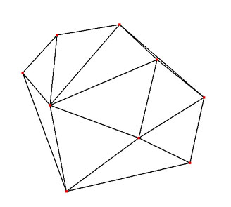
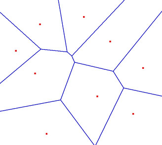

La Bibliothèque Delaunay |
Aide Capsis |
Cette bibliothèque permet de générer une triangulation de Delaunay à partir d’un semi de points par une méthode incrémentielle (points ajoutés un par un). On peut soit récupérer soit les triangles, soit pour chaque point l’ensemble des points voisins.
Elle permet également de calculer pour chaque point le polygone de Voronoi associé (sous la forme d’une liste de sommets, chaque sommet connaissant les points voisins qui l’encadrent).
Soit E un ensemble de N points du plan.

Triangulation de Delaunay (alias Boris Nikolaevich Delone, Mathématicien Russe, 1890-1980) :
La triangulation de Delaunay T de E est la triangulation telle qu’aucun triangle ABC de T ne contient un autre point de E à l'intérieur de son cercle circonscrit.

Diagramme de Voronoï (alias Georgy Fedeseerich Voronoy, Mathématicien Russe, (1868-1908) :
Le diagramme de Voronoï (ensemble des polygones centrés sur chaque point de E) est le dual de la triangulation de Delaunay. Le polygone centré sur un point p de E est la frontière de l'ensemble P des points du plan plus proches de p que de tout autre point de E.

La classe DelaunayDemoTriangulation donne un programme de démonstration de l'utilisation de presque toutes les fonctionnalités de la bibliothèque.
1) on créé une DelaunayTriangulation, que l'on initialise avec DelaunayTriangulation.init (x1, y1, x2, y2). Alternativement on peut reporter l'initiation à 3).
2) on crée un DelaunayVertex (référence, x, y) par point à insérer, qu'on met en liste d'attente avec DelaunayTriangulation.addVertex (DelaunayVertex).
3) éventuellement on fait faire une initialisation automatique avec DelaunayTriangulation.init () : créé un rectangle englobant tous les points mis en file d'attente.
4) on execute l'insertion à proprement parler avec DelaunayTriangulation.doInsertion ().
(on peut faire n * [ étape 2) puis étape 4] ))
5) on peut récupérer les données de la triangulation :
(on peut faire n * [ étape 2) puis étape 4) puis étape 5)] ))
Programme de démonstration de la bibliothèque.
Point à insérer dans la triangulation.
Chaque point est défini par une référence à l'objet en lien avec ce point et des coordonnées x et y.
Après insertion et calculs il contient également :
La méthode equals est redéfinie de façon à ce que deux points soient égaux si leur coordonnées (x,y) sont égales (peu importe les identifiants).
Une méthode getVoroShape () permet d'obtenir une Shape représentant le polygone de Voronoi associé au point.
La méthode DelaunayVertex.getVerticesWithin (rayon) permet d'obtenir tous les autres points de la triangulation situés dans un rayon donné. Cette méthode utilise les voisins du points de façon récursive, il faut donc avoir exécuté DelaunayTriangulation.getVerticesNeighbors () avant. (Rappel : les sommets du rectangle d'initialisation ne sont pas pris en compte comme voisins valides, voir DelaunayTriangulation.getVerticesNeighbors ()).
Arrête d'un triangle (créée transitoirement lors des calculs).
Elle est définie par deux DelaunayVertex la limitant, et un DelaunayTriangle.
La méthode Next (), quand on fournit un des deux sommets de l'arrête, renvoie l'autre.
Sommet d'un polygone de Voronoi.
Est constitué de coordonnées (x,y), et de deux DelaunayVertex voisins (qui appartiennent à un triangle dont le cercle circonscrit a pour centre (x,y)).
Une méthode Next (), permet si on fournit un des points voisins d'obtenir l'autre (afin de parcourir les sommets du polygone de Voronoi dans le bon ordre, voir computeVoronoiDiagram () de la classe DelaunayTriangulation).
Triangle de la triangulation.
C'est la structure à partir de laquelle toute la triangulation est construite.
Il est composé de :
La méthode calculateCircle () permet de calculer ccX, ccY, et r, caractéristiques du cercle circonscrit au triangle.
circleContains () permet de savoir un un point est contenu dans le cercle circonscrit.
contains () permet de savoir si un point est contenu dans le triangle lui-même.
getThirdVertex () permet en donnant deux sommets d'obtenir le troisième sommet du triangle.
getBaryX () et getBaryY () permettent d'obtenir le barycentre du triangle.
getNextTriangleTo () donne le triangle, voisin du triangle courant, qui permet de se rapprocher d'un point dont on spécifie les coordonnées. Utilisé de façon récursive dans DelaunayTriangulation pour trouver le triangle qui contient le point à insérer, en partant d'un triangle de référence (refTriangle).
getShape () donne une Shape représentant le triangle.
Gestion de la triangulation dans son ensemble.
La triangulation est initialisée avec init (), soit en donnant deux points définissant un rectangle, soit en se basant sur les points à insérer (calcul d'un rectangle contenant les points à insérer). Les 4 sommets du rectangle ainsi constitué sont insérés dans la triangulation et stockés dans le tableau corners.
L'insertion se passe en deux phases :
1) on utilise addVertex (), pour placer les points à insérer dans la liste toInsert. Si un point a une position identique à un point précédemment inséré / ajouté à toInsert, il n'est pas ajouté à toInsert, mais à la HashMap duplicatedVertices en tant que clé avec une valeur pointant vers le point de même position (qui a été ou va être inséré).
2) on fait appelle à la méthode doInsertion pour insérer tous les points de toInsert dans la triangulation. Les points sont traités les uns après les autres. Les point situés en dehors du rectangle d'initialisation (ainsi que ceux qui appartiennent à son contour) sont ecartés vers la liste outOfBoundsVertices. Les autres sont insérés, et ajoutés à la liste insertedVertices (N.B. : les 4 "corners" ne sont pas inclus dans cette liste).
La méthode doInsertion () fonctionne de la façon suivante :
N.B. : si la variable savingMode=true (utiliser setSavingMode ()), les listes destrLst et borderLst sont accessibles pour le dernier triangle créé, avec les méthodes getLastDestructedTriangles () et getLastBorderTriangles ().
Après cela on peut avoir accès :
N.B. : il faut donc faire attention quand on utilise la liste insertedVertex, issue de getInsertedVertex, getVerticesNeighbors ou getVoronoiDiagram, à ne pas utiliser des données qui n'ont pas encore été mises à jour (à savoir les polygones si on a calculé les voisins, ou les voisins si on calculé les polygones). Ce choix a été fait pour des raisons de performance : il n'est pas nécessaire de créer les points voisins si on utilise que les polygones de Voronoi et inversement... Notez cependant que getTriangle est excécutée dans computeVerticesNeighbors et computeVoronoiDiagram afin de garantir l'actualité de la triangulation utilisée. De même à chaque insertion de point des variables booléennes sont initialisées pour garantir que getVerticesNeighbors et getVoronoiDiagram, recalculerons les données de façon à tenir compte des nouvelles insertions.
Bilan :
N.B. : la méthode getCleanVoronoiDiagram () donne le même résultat que getVoronoiDiagram (), mais elle supprime tout polygone de voronoi dont un sommet au moins est en dehors du rectangle d'initialisation. (cette suppression est faite directement au niveau des listes de sommets de polygones des points de insertedVertices. Pour récupérer ces polygones il faut excécuter getVoronoiDiagram ().
Polygone contour du semi de point. Il est capable de dire si un
point lui appartient avec contains (x,y), et de donner une Shape
avec getShape ().